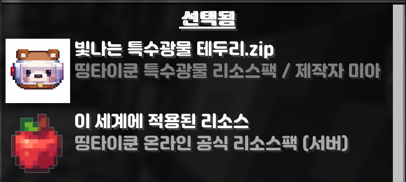

설치 순서
초보자 기준으로 가장 안전한 흐름입니다.
1. Fabric API 설치
필수 모드 실행 환경을 먼저 준비합니다.
2. Continuity / Server Pack Unlocker 설치
권장 모드를 함께 적용합니다.
3. 리소스팩 적용
자료실에서 받은 파일을 적용합니다.
4. 우선순서 확인
개인 리소스팩과 서버 리소스팩의 순서를 마지막으로 점검합니다.
필수 모드와 리소스팩 적용 순서를 간결하게 정리했습니다. 설명이 길어 보이지 않도록 단계와 주의사항을 분리했습니다.
기존 안내를 유지한 핵심 의존성 목록입니다.
| 구분 | 설명 |
|---|---|
| Fabric API | 기본 실행 환경입니다. |
| Continuity | 연결 텍스처와 발광 표현이 정상적으로 보이기 위한 모드입니다. |
| Server Pack Unlocker | 서버 리소스팩 관리에 필요한 모드입니다. |
초보자 기준으로 가장 안전한 흐름입니다.
필수 모드 실행 환경을 먼저 준비합니다.
권장 모드를 함께 적용합니다.
자료실에서 받은 파일을 적용합니다.
개인 리소스팩과 서버 리소스팩의 순서를 마지막으로 점검합니다.
기존 안내 이미지를 그대로 재사용했습니다.

적용 오류가 자주 발생하는 지점만 별도로 정리했습니다.